Kurtarma odaklı hata sayfası · Evergreen kampanya sayfası · Görünüm + CRO + UX
Her iki sayfa da kadın hub ile aynı tasarım dilinde; içerik sayfa tipine göre. Canlı mockup + marka gereklilikleri.
Kurtarma odaklı hata deneyimi, mevcut vs önerilen
Kompakt bant, kategori carousel, koleksiyon, ürünler
Sevgililer Günü: üstte keşif, altta PLP listeleme
URL/routing, CMS, SEO, performans, riskler
Kurtarma odaklı hata deneyimi — çıkmaz değil, yeni başlangıç
Kırık link, eski kampanya URL'i veya yanlış yazım — kullanıcı kaçınılmaz olarak 404'e düşer. Kötü bir 404 oturumu bitirir; iyi bir 404 kullanıcıyı saniyeler içinde tekrar akışa sokar.
Header'sız, linksiz bir 404 bounce'u artırır; kullanıcı geri tuşuna basıp siteyi terk eder.
Kategori, marka ve ürün önerileriyle dolu 404, kullanıcıyı doğru sayfaya yönlendirir; oturum sürer.
Sayfa gerçek 404 döndürmeli (200 değil) ve noindex olmalı; aksi halde Google boş sayfaları indeksler.
404 da markanın parçası; aynı header/footer, ton ve tasarım dili korunmalıdır.
Pazar pratiği: Trendyol, Boyner ve Amazon'un 404'leri tam header/menü + kategori ve ürün önerileri sunar — kullanıcıyı asla boş bırakmaz.
Üst bant minimal: "404" yalnızca bir kez, küçük bir rozet içinde. Tek satır Türkçe açıklama ve iki net CTA (Ana Sayfa, Kampanyalar). Kocaman 404 grafiği veya sayfa-içi ikinci arama yok — header'daki arama zaten mevcut.
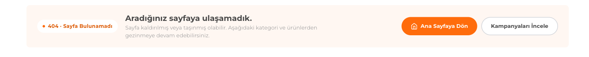
Üst kategorilerin her biri (Kadın, Erkek, Çocuk, Ayakkabı, Spor & Outdoor, Ev & Yaşam, Parfüm & Kozmetik, Kampanyalar) kendi yatay alt-kategori carousel'ine sahip. Görsel alanlar küçük tutuldu ki tek ekranda çok giriş noktası görünsün.
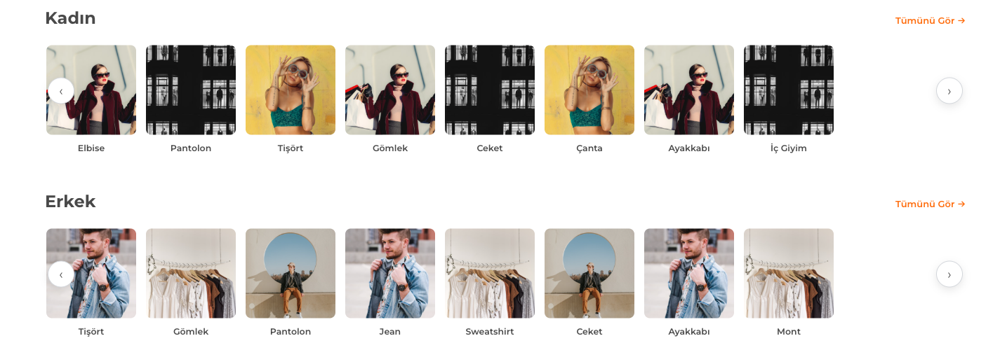
Anasayfadaki "Sezonun Enerjisini Keşfet" mizanseni 404'e taşındı: Ofis Şıklığı, Davet & Söz, Hafta Sonu, Spor & Active gibi an/koleksiyon kartları. Kategori tekrarından kaçınır ve kullanıcıya ilham verir; gerçek görsel + okunabilirlik gradyanı ile.
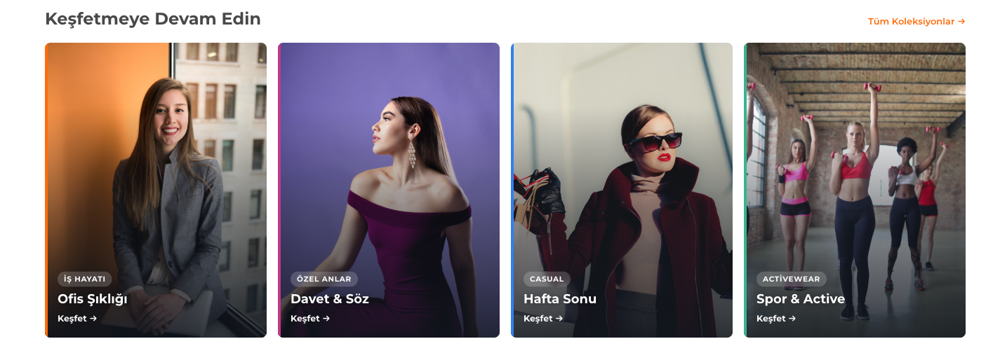
Alt bölümde Popüler Markalar carousel'i ve iki ürün carousel'i: En Çok Satanlar ve En Yeni Ürünler. Kullanıcı aradığını bulamasa bile güçlü ürün önerileriyle alışverişe devam edebilir. En altta popüler aramalar her zaman bir sonraki adımı sunar.
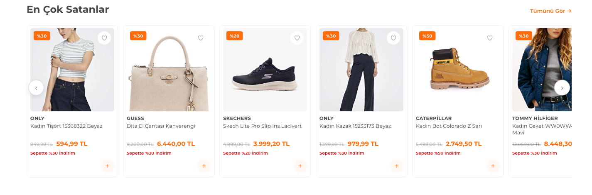
Üstte kompakt özür, hemen ardından zengin navigasyon: kategori carousel'leri, koleksiyonlar, markalar ve ürünler. Tek bir dikey akışta onlarca yeni giriş noktası.
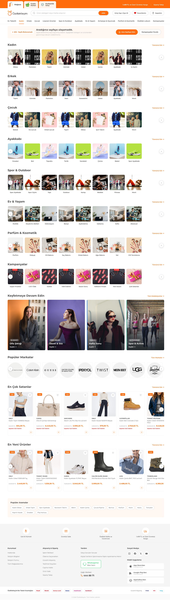
Sevgililer Günü örneği — üstte keşif, altta listeleme
Özel gün kampanya sayfası iki katmanlıdır. Üst katman ilham ve keşif; alt katman gerçek bir PLP listeleme. Kullanıcı ister yukarıdan ilhamla, ister aşağıdan filtreyle ilerler.
Tek banner yerine 3-4 temalı slide: hediye setleri, indirim, son gün vurgusu. Otomatik döner; ok ve nokta navigasyonu var. Kampanyanın atmosferini ilk ekranda kurar ve net bir CTA ile yönlendirir.
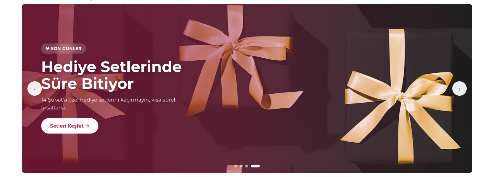
Hediye kararını kolaylaştıran persona bloğu: Kadına, Erkeğe, Eşe. Her kart ilgili koleksiyona yönlendirir. Hediye alışverişinin en büyük sürtünmesi olan "ne alacağım?" sorusunu en başta yanıtlar.
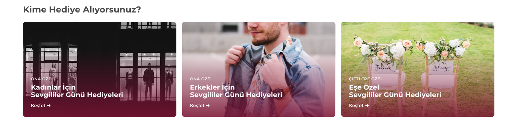
Sevgiliye hediye kategorileri tek sıra, sağa kaydırmalı slider olarak: parfüm, takı, saat, çikolata, iç giyim. Küçük kartlar ve ok butonlarıyla hızlı, görsel bir hediye keşfi sağlar.
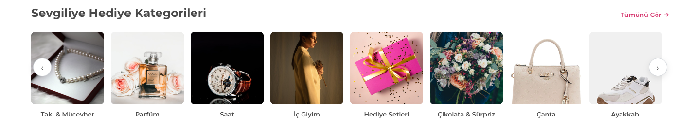
"Sevgililer Gününe Özel Özdilekteyim'in Önerileri" — editör seçkisi ürün carousel'i. Popüler ürünlerden ayrı, küratörlü bir öneri katmanı; özel güne özel hediye fikirleri sunarak kararsız kullanıcıyı yönlendirir.
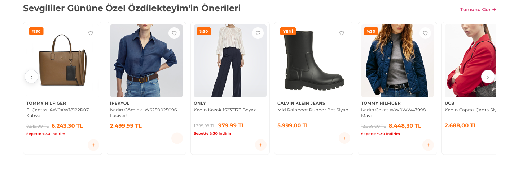
"Bütçene Göre Hediye Seç" çipleri kullanıcıyı fiyat segmentine göre yönlendirir (ör. 0-500₺, 500-1000₺, 1000₺+). Öne çıkan markalar carousel'i ise hediye için güvenilir marka çapaları sunar.
BÜTÇEYE GÖRE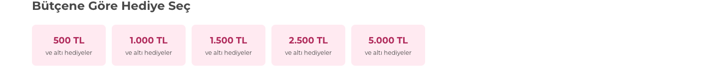
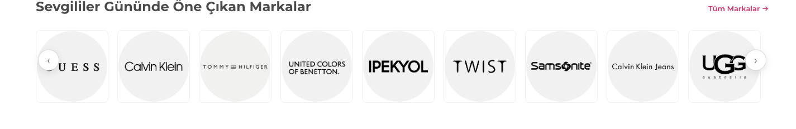
Popüler ürünler carousel'i sosyal kanıt ve trend ürünleri öne çıkarır. Kullanıcı kararsızsa "herkesin tercih ettiği" ürünler güçlü bir yönlendirme sağlar; keşif katmanını ürünle sonlandırır.
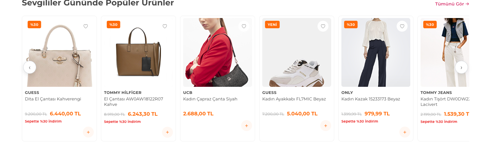
Keşif katmanının altında gerçek bir listeleme: sol tarafta sayfayla birlikte kayan (sticky) filtre — Kampanyalar (Sevgililer Günü ön-seçili), Cinsiyet, Ürün Çeşidi, Marka, Fiyat, Renk, Beden. Üstte sıralama ve aktif filtre çipleri, sağda 4 sütun ürün grid ve sayfalama.
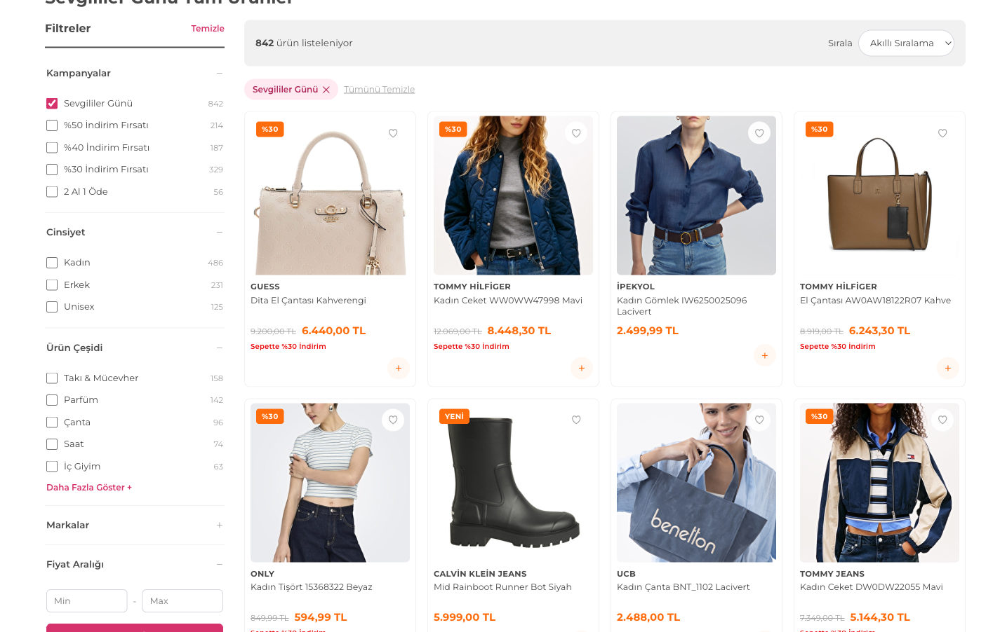
Üstte ilham ve hediye keşfi, altta tam katalog listeleme. Kullanıcı duygusal girişten (hero, persona) rasyonel filtrelemeye (PLP) kesintisiz iner.
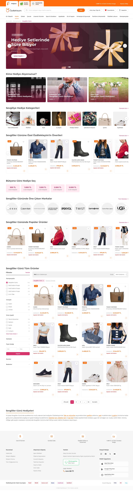
URL/routing · CMS · SEO · performans · riskler
404 görsel olarak markaya uygun olduğu kadar teknik olarak da doğru kurgulanmalıdır. Aksi halde SEO'da soft-404 ve indeksleme sorunları doğar.
Sunucu soft-200 değil, gerçek 404 döndürmeli — yanlış/silinmiş URL'ler için doğru sinyal.
Sayfa noindex olmalı; Google 404'leri indekslemez ama içindeki linkleri takip eder.
Kalıcı silinen ürün/kategori URL'leri en yakın canlı sayfaya 301 ile yönlendirilmeli.
Kategori, marka ve ürün carousel'leri CMS/feed'den beslenmeli — kendiliğinden güncel.
404 event'i ve geldiği kırık URL (referrer) izlenmeli; en sık kırık linkler raporlanmalı.
Header/footer ortak bileşenlerden gelmeli — bakım tek noktadan, tutarlılık garanti.
Evergreen kampanya sayfası, yıllar içinde biriken SEO değerini koruyacak şekilde kalıcı kurgulanmalı; sezon dışı davranışı planlanmalıdır.
/sevgililer-gunu gibi her yıl aynı URL. Yıl içeren URL'ler SEO değerini sıfırlar.
Sezon dışında CMS tarih kuralıyla evergreen/yedek içerik gösterilmeli; sayfa 404 vermemeli.
Hero, persona, hediye, öneriler slotları pazarlamanın CMS'den güncelleyebileceği bileşenler olmalı.
PLP facet'leri canlı katalogla senkron; Sevgililer Günü filtresi ön-seçili gelmeli.
Filtre kombinasyon URL'leri temel sayfaya canonical olmalı — index bloat'u önlenir.
ItemList/BreadcrumbList şeması, kampanya başlangıç-bitiş tarihleri ve OG görseli tanımlı olmalı.
Kampanya URL'i sezon dışında 404 verirse biriken backlink/SEO değeri kaybolur. CMS tarih kuralıyla evergreen yedek içerik şart.
404 sayfası 200 döndürürse Google boş/önerili sayfaları indeksler. Gerçek 404 status + noindex döndürülmeli.
Üst keşif ve alt PLP aynı ürünleri farklı sırada gösterirse kafa karıştırır. Üst = küratörlü, alt = tam katalog konumlanmalı.
404 ve kampanyada çok sayıda yatay carousel var; her birinin farklı amacı olmalı, aralarında farklı bileşenler yer almalı.
Görsel-yoğun sayfalar; WebP/AVIF, lazy load, sadece görünür kart render'ı ve hero preload kritik. CWV haftalık izlenmeli.
Ürün/marka carousel'i boşsa CMS kuralıyla gizlenmeli; "yakında" placeholder marka algısını düşürür.
Sorularınız ve geri bildirimleriniz için hazırız.
Sonraki adım: tasarım onayı + 404 ve kampanya sayfası faz 1 başlangıcı.